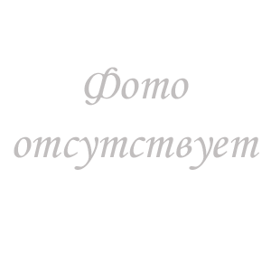

Борис Павлович Швалёв заложил материальный и управленческий фундамент поселения. Он строил не просто первые дома и улицы, а формировал сам уклад жизни будущего города Югорска.
Швалёв Борис Павлович
Первый председатель Комсомольского поссовета (1911–1992)
Руководитель-основатель, возглавлявший местную власть с 1962 по 1968 год. Пройдя тяжёлое сиротское детство и фронтовые дороги Великой Отечественной войны, он создавал систему управления и быт нового таёжного посёлка буквально с чистого листа.

У истоков местного самоуправления
1962 — 1968
Первый глава
Избран первым председателем исполкома Комсомольского поселкового Совета, взяв на себя распределение жилья, снабжение и налаживание быта.
База жизни
Первые объекты
За годы его руководства построены первые жилые дома и улицы, открыты больница, пекарня, школа, клуб и библиотека.
Фронтовик
Боевые ордена
За отвагу в годы Великой Отечественной войны награждён орденом Красной Звезды, орденом Отечественной войны II степени и медалями.
Наставник
Связь поколений
После выхода на пенсию в 1968 году активно участвовал в общественной жизни, встречался с молодёжью и передавал ей свой опыт.